1清华大学 2麻省理工学院 3中国人民大学
xiaocj20@mails.tsinghua.edu.cn，{hanxu2022,liuzy}@tsinghua.edu.cn
LLM 已成为具有长流式输入的现实应用（例如由 LLM 驱动的 agent）的基石。然而，现有 LLM 在最大长度受限的序列上进行预训练，由于分布外问题和 attention 分散问题，无法处理更长的序列。常见解决方案通常涉及在更长序列上进行持续预训练，这会引入昂贵的计算开销，以及模型能力不可控的变化。本文揭示了 LLM 无需任何微调即可理解超长序列的内在能力。为此，我们提出一种基于记忆的免训练方法 InfLLM。具体而言，InfLLM 将远距离上下文存储到额外的记忆单元中，并采用高效机制查找与 token 相关的单元，用于 attention 计算。因此，InfLLM 使 LLM 能够以有限的上下文窗口高效处理长序列，并充分捕获长距离依赖。无需任何训练，InfLLM 就能让在几千个 token 组成的序列上预训练的 LLM，取得与在长序列上持续训练这些 LLM 的有竞争力的基线相当的性能。即使将序列长度扩展到 1,024K，InfLLM 仍能有效捕获长距离依赖。我们的代码见 https://github.com/thunlp/InfLLM。
近期，LLM 在各种任务中取得了显著成果（Brown et al., 2020; Bommasani et al., 2021; Han et al., 2021; Touvron et al., 2023; Meta, 2024）。它们遵循复杂指令的能力为实现 AGI 带来了希望（OpenAI, 2023; Ouyang et al., 2022）。随着 LLM 驱动的应用蓬勃发展，例如 agent 构建（Park et al., 2023; Qian et al., 2023; Wang et al., 2024a）和具身机器人（Driess et al., 2023; Liang et al., 2023），增强 LLM 处理流式长序列的能力变得越来越关键。例如，LLM 驱动的 agent 需要基于全部历史记忆，处理从外部环境持续接收的信息，因此必须具备强大的流式长序列处理能力。
由于未见过的长输入所带来的限制（Han et al., 2023），以及包含噪声的上下文造成的 attention 分散（Liu et al., 2023; Tworkowski et al., 2023），大多数仅在几千个 token 组成的序列上预训练的 LLM 无法处理更长序列（Press et al., 2022; Zhao et al., 2023）。常见解决方案通常是在更长序列上持续训练 LLM，但这又会导致高昂成本，并需要大规模、高质量的长序列数据集（Xiong et al., 2023; Li et al., 2023）。而在更长序列上的持续训练过程，还可能削弱 LLM 在短上下文上的性能（接原文第 2 页）。
∗ 同等贡献。
† 通讯作者。
（接原文第 1 页）
（Ding et al., 2024）。鉴于此，无需进一步训练即可改善 LLM 长度泛化能力的研究受到广泛关注，目标是让在短序列上训练的 LLM 直接适用于长序列。
本文提出一种基于记忆的免训练方法 InfLLM，以有限的计算成本对超长序列进行流式处理。具体而言，InfLLM 将 SWA（Xiao et al., 2023; Han et al., 2023）与高效的上下文记忆相结合，使每个 token 仅关注局部上下文以及记忆中的相关上下文。考虑到 attention 分数矩阵的稀疏性，处理每个 token 通常只需要其上下文的一小部分（Zhang et al., 2023b），其余无关上下文会成为噪声，导致 attention 分散问题（Tworkowski et al., 2023）。因此，我们构建了包含远距离上下文信息的外部记忆。每个计算步骤仅选择记忆中的相关信息，而忽略其他无关噪声。借助这一机制，LLM 可以使用有限大小的窗口理解整个长序列，并避开包含噪声的上下文。
长序列中大量带噪声的上下文 token，对记忆查找的有效性和效率构成了重大挑战。为应对这些挑战，我们设计了块级上下文记忆机制。具体而言，InfLLM 将过去的键值向量组织成块，每个块包含一段连续的 token 序列。在每个块中，选择获得最高 attention 分数、语义上最重要的 token 作为单元表示，用于随后记忆查找中的相关性计算。这一设计主要带来两项好处：（1）有效查找：与单个 token 相比，每个块连贯的语义能够更有效地满足相关信息检索的需求。单元表示的选择最大限度地减少了不重要 token 对相关性计算的干扰，提高了记忆查找的整体命中率。（2）高效查找：块级记忆单元消除了逐 token 计算相关性的需要，大幅降低计算成本。此外，块级单元确保了连续的内存访问，从而最大限度地降低记忆加载成本，提高计算效率。进一步考虑到大多数单元使用频率较低，InfLLM 将所有单元卸载到 CPU 内存中，并在 GPU 显存中动态保留经常使用的单元，显著减少 GPU 显存占用。值得注意的是，InfLLM 中的块级记忆机制不涉及任何额外训练，可以直接应用于任何 LLM。
为评估 InfLLM 的有效性，我们采用 Mistral-7B-inst-v0.2（Jiang et al., 2023）和 Llama-3-8B-Instruct（Meta, 2024）作为基础模型，它们分别在不超过 32K 和 8K 个 token 的序列上进行预训练。我们使用两个广泛采用的基准 ∞-Bench（Zhang et al., 2023a）和 Longbench（Bai et al., 2023）进行评估。尤其是 ∞-Bench 的平均序列长度超过 100K 个 token，对大多数现有 LLM 都具有挑战性。与在更长序列上持续训练 LLM 的典型方法相比，实验结果表明，InfLLM 可以让在几千个 token 组成的序列上预训练的 LLM，在无需任何额外训练的情况下取得相当的性能。此外，我们在包含 1,024K 个 token 的序列上测试 InfLLM，它仍能有效捕获长距离依赖，展示了在长流式输入场景中的潜力。
让 LLM 处理长序列已得到广泛研究（Dong et al., 2023; Tay et al., 2023; Huang et al., 2023），一般可分为两类主要方法：上下文长度外推和高效上下文计算。前者旨在让在短序列上训练的 LLM 处理远长于训练序列的序列。后者聚焦于提高 attention 层的计算效率，使从头预训练能够处理更长序列的 LLM 更加高效。尽管本文重点是上下文长度外推，我们也详细介绍高效上下文计算，并介绍基于记忆的模型的相关工作。
上下文长度外推。由于计算和内存需求较高，LLM 的训练通常局限于短序列。直接将 LLM 应用于长序列，会面临由长输入和带噪声输入引起的分布外与 attention 分散挑战（Han et al., 2023; Tworkowski et al., 2023）。因此，上下文长度外推作为一种无需额外训练即可增加 LLM 序列长度的方法，受到了关注。最早的方法涉及在预训练期间设计新的相对位置编码机制（接原文第 3 页）。
（接原文第 2 页）
（Press et al., 2022; Sun et al., 2023）。后续研究主要聚焦于广泛使用的 RoPE（Su et al., 2021），提出通过缩小或复用原始位置索引来实现长度外推（Chen et al., 2023b; Peng et al., 2023; Chen et al., 2023a; Jin et al., 2024; An et al., 2024）。这些工作能够缓解未见过的长度带来的分布外问题，但无法缓解噪声上下文导致的 attention 分散挑战。为解决这一问题，Xiao et al.（2023）和 Han et al.（2023）采用 SWA，直接丢弃全部远距离上下文，以流式方式读取超长序列。然而，这些模型忽略远距离 token 的信息，因而无法捕获理解长文本所需的长距离依赖。本文的 InfLLM 使用 SWA，并额外构建高效上下文记忆，为 LLM 提供相关上下文信息，使其能够有效读取并理解超长序列。
高效上下文计算。attention 层的二次计算复杂度是限制 LLM 长序列处理能力的主要因素。因此，许多研究者致力于设计高效 attention 机制，包括使用稀疏 attention（Zaheer et al., 2020; Beltagy et al., 2020; Child et al., 2019; Ainslie et al., 2020; Zhao et al., 2019）、使用核函数近似 attention 计算（Kitaev et al., 2020; Wang et al., 2020; Katharopoulos et al., 2020），以及用线性复杂度的 SSM 替代 attention 层（Gu et al., 2022; Gu & Dao, 2023）。这些方法需要修改模型架构，因此需要重新训练模型。同时，许多研究者通过驱逐无用的键值向量来减少计算，提高推理效率（Zhang et al., 2023b; Li et al., 2024; Ge et al., 2023）。由于未见过的位置引起的分布外问题，这些方法无法在不进一步训练的情况下外推 LLM 的上下文窗口。
基于记忆的模型。记忆网络已被研究了数十年，并已被证明能够有效地为模型提供额外知识和信息存储能力（Graves et al., 2014; Weston et al., 2015; Sukhbaatar et al., 2015; Miller et al., 2016）。随着预训练模型的成功，记忆层也逐步应用于循环 Transformer 层的训练过程，使模型能够递归地处理长序列（Dai et al., 2019; Rae et al., 2020; Khandelwal et al., 2020; Wu et al., 2022; Bertsch et al., 2023; Munkhdalai et al., 2024）。这些工作将序列分段，分别编码每一段，并用记忆存储前面各段的上下文信息。虽然这些方法在概念上与 InfLLM 相似，但它们涉及模型架构修改，并需要进一步训练整个模型。相比之下，我们旨在探索 LLM 的内在特性，提出用于长文本理解的免训练记忆模块。
如图 1 所示，InfLLM 构建免训练的上下文记忆，高效地为每个 token 提供高度相关的上下文，使 SWA 具备捕获长距离依赖的能力。
改善 LLM 长度泛化能力的主要限制，来自长上下文和噪声上下文引起的分布外问题与 attention 分散问题。为解决这些问题，我们遵循已有工作（Xiao et al., 2023; Han et al., 2023），采用 SWA，每一步只考虑局部 token。此外，我们构建额外的上下文记忆模块，提供相关上下文信息，以捕获长距离依赖。
具体而言，将长输入序列记为 \(s = \{t_{i}\}^{l}_{i=1}\)。由于 GPU 显存有限，我们不会一次性编码整个 \(s\)，而是逐块编码输入序列 \(s\)，逐 token 生成输出。每个计算步骤的输入包括过去的键值向量 \(P = \{(k_j,v_j)\}^{l_P}_{j=1}\)，以及当前 token \(X = \{t_{i+l_P}\}^{l_X}_{i=1}\)。在编码步骤中，\(l_{X}\) 等于块大小；在 decoding 步骤中，\(l_{X}\) 等于 1。
根据与当前 token 的距离，可以将 \(P\) 分为三组，按距离当前 token 从远到近排列：初始 token，\(I = P[1:l_{I}]\)；被驱逐的 token，\(E = P[l_{I}+1:l_{P} - l_{L}]\)；以及局部 token，\(L = P[l_{P} - l_{L}+1:l_{P}]\)。这里，\(l_{P}\)、\(l_{I}\)、\(l_{L}\) 分别表示过去键值向量的长度、初始 token 的长度和局部窗口大小。所有被驱逐的 token \(E\) 都存储在（接原文第 4 页）
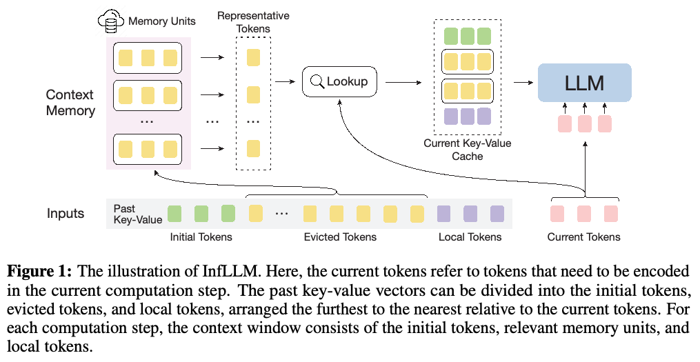
（接原文第 3 页）
由多个记忆单元组成的上下文记忆中。每一步，InfLLM 将初始 token、上下文记忆中的相关记忆单元和局部 token 拼接起来，形成当前 KV cache \(C = \operatorname{Concat}(I, f(X, E), L)\)。\(f(\cdot )\) 表示上下文记忆的查找操作。Attention 输出计算如下：
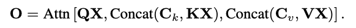
这里，\(Q\)、\(K\) 和 \(V\) 是 attention 层的参数，\(C_{k}\) 和 \(C_{v}\) 表示 \(C\) 中的键向量和值向量。如果 \(f(\cdot )\) 始终返回空集，InfLLM 就退化为直接丢弃远距离上下文的 LM-Infinite（Han et al., 2023）和 Streaming-LLM（Xiao et al., 2023）。
已有研究表明，LLM 的 attention 分数矩阵是稀疏的，仅保留一小部分键值向量就能够生成相同输出（Zhang et al., 2023b）。受此启发，我们设计上下文记忆，从大量被驱逐的 token 中高效查找相关上下文，并忽略无关上下文以节省计算成本。最直观的方法，是针对每个过去的键值向量、每个 attention 头分别构建 token 级记忆单元；但这会产生海量记忆单元，以及不可接受的计算成本和非连续内存访问成本。因此，考虑到长序列局部语义的连贯性，我们将过去的键值向量分成块，每个块作为一个记忆单元，并在块级进行记忆查找，在保持性能的同时降低成本。
本节将介绍块级记忆单元的细节，然后说明如何为选中的相关记忆单元分配位置 embedding，以及如何管理上下文记忆的缓存。
块级记忆单元。相比 token 级记忆单元，块级记忆单元可以节省计算成本。但这也给单元表示带来了新挑战：它们应当包含整个单元的语义，以有效计算相关性分数，同时高效利用内存，以支持上下文长度的扩展。传统方法通常需要训练额外编码器，将给定单元映射成低维向量。受隐藏状态中 token 冗余现象的启发（Goyal et al., 2020; Dai et al., 2020），我们从整个块中选择几个代表性 token，作为单元表示。对于第 \(m\) 个 token，定义其代表性分数为：
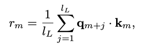
其中，\(q_{m+j}\) 是第 \((m + j)\) 个 token 的查询向量，\(k_{m}\) 是第 \(m\) 个 token 的键向量。直观上，\(r_{m}\) 表示第 \(m\) 个 token 在其对应局部窗口中的重要性，反映它对局部窗口中其他 token 的影响（接原文第 5 页）。
（接原文第 4 页）
程度。代表性分数的计算不需要额外参数。
形式上，给定被驱逐的 token \(E\)，将其分成若干记忆单元，每个单元包含 \(l_{bs}\) 个 token。对于每个单元，选择代表性分数最高的 \(r_{k}\) 个 token 作为代表性 token。通常，\(r_{k}\) 是一个较小的正整数。将记忆单元记为 \(B = \{(k_j^B,v_j^B)\}^{l_{bs}}_{j=1}\)，该单元的代表性 token 记为 \(R(B) = \{(k_{b_j}^B,v_{b_j}^B)\}^{r_k}_{j=1}\)。
在记忆查找阶段，仅加载相关性分数最高的 \(k_{m}\) 个单元，用于当前 attention 计算。我们按下式计算 \(B\) 与当前 token \(X\) 之间的相关性分数：
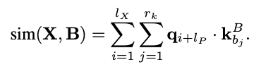
值得注意的是，代表性 token 的选择是一种获取单元表示的免训练方法。这里也可以训练额外编码器，生成表达能力更强的单元表示；我们将其留作未来工作。
位置编码。现有 LLM 训练通常使用数量有限的位置编码，直接将其应用于更长序列的处理时，会遇到分布外挑战（Han et al., 2023）。此外，在 InfLLM 中，当前 KV cache 由一些不连续的文本块组成，直接给它们分配连续位置编码也会导致不匹配，使模型困惑。因此，受已有工作启发（Raffel et al., 2020; Su, 2023），我们为所有超出局部窗口大小的 token 分配相同的位置编码。具体而言，上下文记忆单元中的 token 与当前 token 之间的距离被设为 \(l_{L}\)。
缓存管理。为使 LLM 能够处理超长序列流，同时捕获长上下文中的语义相关性，我们需要保留全部记忆单元，并在每个计算步骤查找它们。考虑到大多数单元很少使用，我们采用卸载机制，将大多数记忆单元存储在 CPU 内存中，仅在 GPU 显存中保留代表性 token 和当前步骤需要的记忆单元。此外，考虑到长序列的语义连贯性，即相邻 token 通常需要类似的记忆单元，我们在 GPU 显存中分配缓存空间，并采用最近最少使用策略管理。该方法使得在有限 GPU 显存下高效编码超长序列成为可能。观察表明，我们的卸载机制让 InfLLM 只需 26G 显存即可处理包含 100K 个 token 的序列。此外，GPU 缓存未命中率很低，这意味着卸载机制在节省 GPU 显存的同时，不会在记忆加载中引入显著的时间开销。详情见附录。
进一步，对于超长序列，每个单元的代表性 token 也可以卸载到 CPU 内存中，构建高效的 k 近邻索引，从而进一步降低计算复杂度。
数据集。我们采用广泛使用的长文档基准 ∞-Bench（Zhang et al., 2023a）中的代表性任务进行评估。由于基础模型主要在英文语料上预训练，我们使用英文数据集进行评估。∞-Bench 的数据集覆盖问答、摘要、上下文检索和数学计算等多种任务。∞-Bench 的平均长度为 145.1K。序列长度的第 95 百分位数为 214K，远超基础模型的最大长度。这些数据集的详细统计和任务描述列于附录。此外，我们也在 LongBench（Bai et al., 2023）上进行了评估。LongBench 的结果见附录。
基线模型。为验证所提方法的有效性，我们将 InfLLM 与以下有竞争力的基线模型进行比较：（1）原始模型：报告未进行上下文长度外推的原始 LLM 的性能。（2）位置缩放与复用：NTK-aware scaled RoPE（NTK）（LocalLLaMA, 2023）设计了非线性插值方法，（接原文第 6 页）
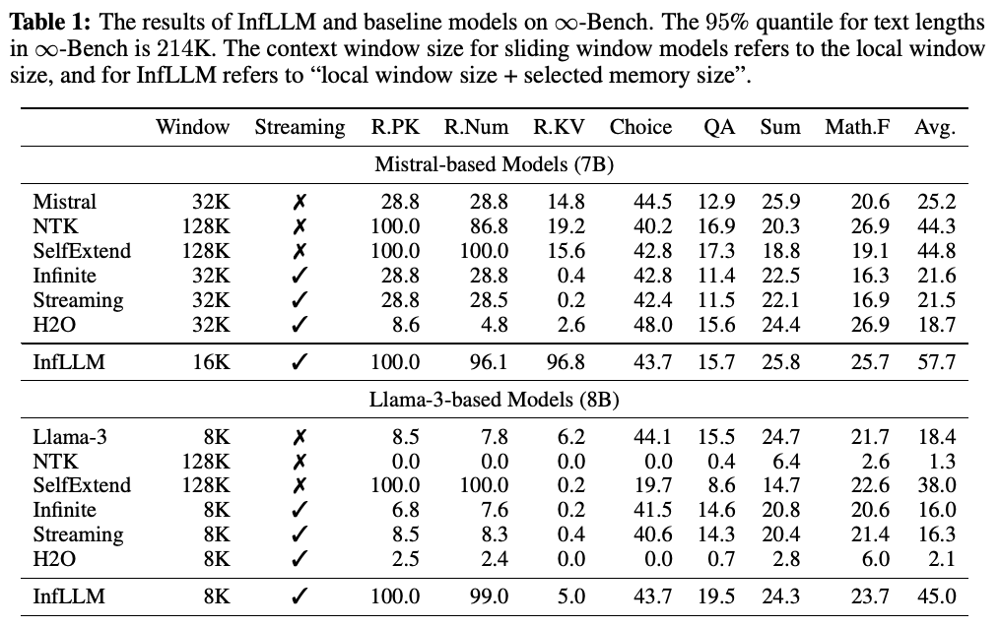
（接原文第 5 页）
其本质上改变了 RoPE 的旋转基数。SelfExtend 在相邻 token 之间复用位置 ID，使扩展后的相对位置落在训练上下文窗口范围内。（3）滑动窗口：这些方法应用滑动窗口机制丢弃远距离上下文，包括 LM-Infinite（Han et al., 2023）和 StreamingLLM（Stream）（Xiao et al., 2023）。因此，每次 attention 计算步骤的输入长度都不超过上下文窗口。（5）键值驱逐：KV 驱逐方法旨在长序列处理过程中丢弃无用键值向量，因此通常用于降低计算复杂度。我们报告广泛使用的键值驱逐方法 H2O（Zhang et al., 2023b）的结果。由于未见过的位置 embedding，键值驱逐方法无法泛化到更长序列，预计难以取得令人满意的性能。
译注：本段条目编号沿用原文，原文从（3）直接跳至（5）。
这里，InfLLM 和采用滑动窗口机制的模型可以处理超长流式输入。对于 NTK 和 SelfExtend，我们将上下文窗口扩展至 128K，使 LLM 能够处理 ∞-Bench 中的大多数样本。
本文旨在让使用有限序列长度训练的 LLM，无需进一步训练即可读取并理解超长序列。我们采用 Mistral-7B-Instruct-v0.2（Jiang et al., 2023）和 Llama-3-8B-Instruct（Meta, 2024）作为基础模型。它们的最大长度分别为 32K 和 8K。
对于我们的方法，将编码块大小设为 512，将过去键值向量的记忆单元大小 \(l_{bs}\) 设为 128。代表性 token 数量 \(r_{k}\) 设为 4。对于基于 Mistral 和基于 Llama-3 的 InfLLM，局部窗口大小均设为 4K。基于 Mistral 的 InfLLM 每一步加载 96 个相关记忆单元，基于 Llama-3 的 InfLLM 每一步加载 32 个相关记忆单元。对于 LM-Infinite、StreamingLLM 和 InfLLM，初始 token 数量均设为 128，以覆盖系统提示和任务描述。我们使用 FlashAttention（Dao, 2023）加速所有基线模型的实验。更多细节请参阅附录。
基于 Mistral 和基于 Llama-3 的模型结果见表 1。从结果可以观察到：（1）与同样能够读取超长序列的滑动窗口模型相比，我们的方法表现出显著的性能提升。这表明，InfLLM 的上下文记忆能够准确地为 LLM 补充（接原文第 7 页）
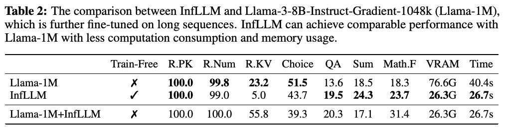
（接原文第 6 页）
相关上下文信息，从而实现高效、有效的长序列理解与推理。（2）位置缩放与复用方法 NTK 和 SelfExtend 在将序列长度扩展至 128K 的同时，往往会损害模型性能。这是因为它们无法解决噪声上下文导致的 attention 分散问题。相比之下，我们的模型能够持续改善超长序列上的性能。我们成功将 Llama-3 从 8K 长度泛化至其 16 倍以上，并在 ∞-Bench 上取得了良好性能。（3）位置缩放与复用方法可以增加 LLM 的最大序列长度，但也增加了计算和内存成本，限制了这些方法的应用。相比之下，InfLLM 使用块级记忆和卸载机制，能够在有限资源下高效处理长序列。
本文聚焦于无需额外训练即可扩展 LLM 的上下文窗口。本节从性能和效率两方面，将 InfLLM 与在长序列上持续训练的模型进行比较。具体而言，我们选择 Llama-3-8B-Instruct-Gradient-1048k（Llama-1M）3，该模型在长文本数据和对话数据集上进一步微调，将上下文窗口扩展至 1048K。此外，我们也将 InfLLM 应用于 Llama-1M，把局部窗口设为 4K，选中的记忆大小设为 4K。表 2 报告了 ∞-Bench 上的结果、GPU 显存使用量和时间消耗。从结果可以观察到：（1）与在长序列上持续训练的模型相比，InfLLM 无需任何额外训练即可取得相当甚至更好的结果。这表明，LLM 本身具备识别长序列中关键信息，并进行有效理解和推理的能力。值得注意的是，Llama-1M 的持续训练需要 512 块 GPU，许多研究者无法负担。相比之下，InfLLM 不需要任何训练，体现了其实用性。（2）效率方面，相比全 attention 模型，InfLLM 的时间消耗减少了 34%，GPU 显存使用量仅为其 34%。此外，在更长的 256K token 序列上，全 attention 基线因显存不足而失败，而 InfLLM 可以在单块 GPU 上高效处理最长 1024K token 的序列。（3）InfLLM 也可以直接与持续训练的模型结合，只使用 8K 上下文窗口便取得相当甚至更好的结果。这表明 InfLLM 也可以作为提高推理速度的有效方式。
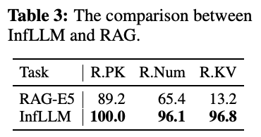
InfLLM 利用 LLM 的内在能力构建上下文记忆，收集与 token 相关的信息，这一概念类似于 RAG（Lewis et al., 2020; Nakano et al., 2021）。然而，与采用 RAG、将历史上下文视为可搜索数据库来理解长序列的方法（Xu et al., 2023）相比，InfLLM 具有若干优势：（1）免训练：RAG 需要额外检索数据来训练检索模型，而 InfLLM 无需训练，适用于任何 LLM。此外，RAG 还需要微调 LLM，使其适应检索知识增强后的输入。（2）更广泛的适用性：RAG 模型通常受其检索组件性能的限制。此外，现有检索模型会受到分布外问题的影响，难以（接原文第 8 页）
3 https://huggingface.co/gradientai/Llama-3-8B-Instruct-Gradient-1048k
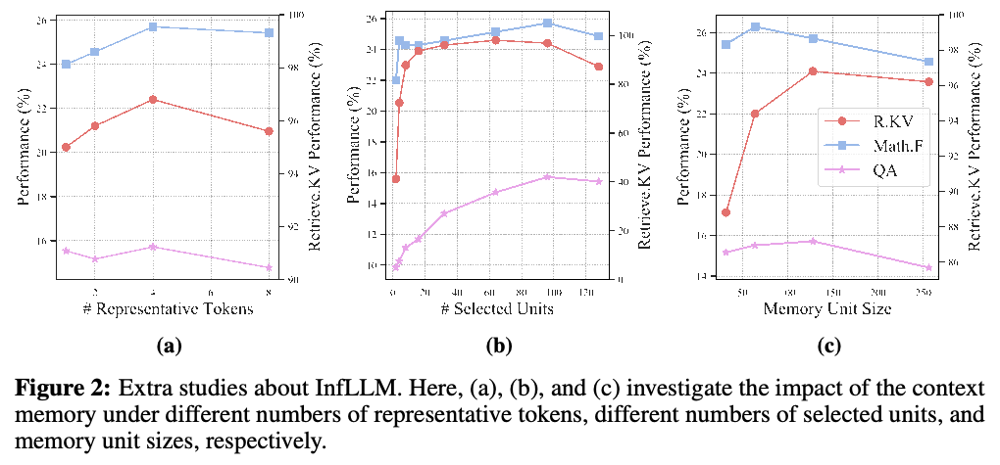
（接原文第 7 页）
在其训练分布之外的任务上表现良好（Lin et al., 2023; Muennighoff et al., 2023）。这一限制会损害 RAG 系统的整体性能。相比之下，InfLLM 对任务没有特定要求，可以方便地用于长序列。
为验证 InfLLM 的泛化能力，我们在三项上下文检索任务上开展了比较 RAG 与 InfLLM 的实验。我们使用 E5-mistral-7B-instruct（Wang et al., 2024b）作为检索模型。结果见表 3。我们的发现表明，即使不使用额外数据或训练，InfLLM 也能持续优于 RAG 模型，凸显其更强的泛化能力。对外部检索模型的依赖，使 RAG 在处理多样任务时不够灵活。
InfLLM 依靠上下文记忆查找相关信息。我们进一步探索上下文记忆核心组件的影响，具体包括代表性 token 和记忆单元。结果见图 2。
不同的代表性 token 数量。InfLLM 将键值向量分成记忆单元，并从单元中选择几个代表性 token 作为单元表示。因此，这些代表性 token 在语义上表示整个单元的能力，直接影响模型性能。我们将代表性 token 数量设为 {1, 2, 4, 8} 进行实验。结果见图 2a。可以观察到，随着代表性 token 数量增加，模型性能呈改善趋势，这说明更多代表性 token 往往能更好地表示记忆单元的语义内容。然而，当代表性 token 数量达到 8 时，性能略有下降。这种下降可归因于将语义不相关的 token 纳入了单元表示。未来工作中，更高效、能力更强的单元表示将进一步提高模型性能。
不同的选中单元数量。选中的单元用于向 LLM 提供相关上下文。我们将单元数量设为 {2, 4, 8, 16, 32, 64, 96, 128} 进行实验。从图 2b 可以观察到，当选中单元数量从 1 增加至 32 时，模型性能显著改善；这是因为更多单元意味着相关内容的召回率更高。更多单元也会增加所需的记忆调度时间和 attention 计算时间。因此，进一步提高查找准确性，仍是改善 InfLLM 效率的关键方向。
译注：原文实验数量集合从 2 开始，但随后叙述写为“从 1 增加至 32”，此处保留原文。
不同的记忆单元大小。每个记忆单元应当是一个连贯的语义单元。单元过大会妨碍精确查找，单元过小则会增加记忆查找的计算开销。我们使用 {32, 64, 128, 256} 的单元大小评估 InfLLM，并将总上下文长度保持为 12K。结果见图 2c。可以观察到，由于输入序列特征不同，不同任务的最优单元大小也不同。例如，（接原文第 9 页）
（接原文第 8 页）
在 Retrieve.KV 中，一个键值对构成一个语义单元，而在 Math.Find 中，单个数字就是一个语义单元。使用启发式规则分割上下文容易导致次优性能。因此，探索如何动态分割上下文，是未来研究的重要方向。
为进一步验证动态记忆查找和单元表示的有效性，本节开展消融研究。结果见表 4。
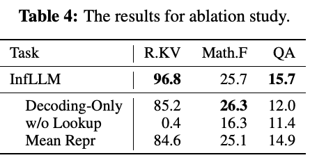
上下文记忆查找。InfLLM 在输入编码和输出 decoding 步骤中均采用动态上下文记忆查找，以全面理解长文本。我们报告仅在输出 decoding 时查找（Decoding-Only），以及完全不进行记忆查找（w/o Lookup）的 InfLLM 结果。可以观察到，随着记忆查找次数减少，模型性能显著下降。这表明，远距离上下文信息对于长输入编码阶段和答案生成阶段都至关重要。模型需要整合长距离上下文，生成连贯的上下文记忆以理解输入。LLM 应当从大量历史上下文信息中收集有用信息，以生成正确答案。
单元表示。我们设计块级记忆，以高效查找上下文信息。我们选择几个代表性 token 作为单元表示，用于相关性计算。我们报告采用另一种免训练表示方法（Mean Repr）的 InfLLM 结果，该方法通过对记忆单元中的键向量求平均来计算表示。从结果可以观察到，采用平均表示的 InfLLM 也能取得有竞争力的性能。这表明，LLM 中原始 attention 向量对于相关性分数计算是有效的，而探索更高效的单元表示是未来的重要方向。
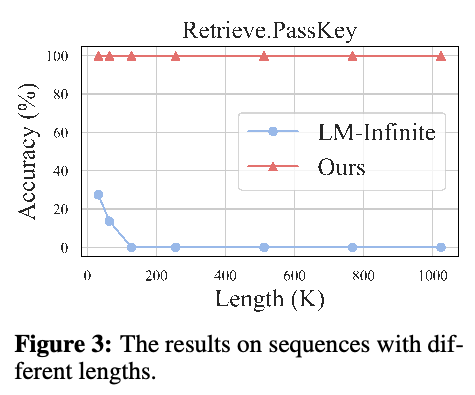
为评估 InfLLM 在超长序列上的有效性，本节将序列长度扩展至 1024K，评估 InfLLM 捕获长序列中上下文相关性的能力。具体而言，我们采用 ∞-Bench 中的 Retrieve.PassKey 任务进行评估。该任务要求 LLM 在冗长、带噪声的上下文中找到一个 5 位数字序列，因此需要 LLM 有效定位长序列中的相关信息。我们自动生成包含 {32, 64, 128, 256, 512, 768, 1024} 千个 token 的输入，每种长度生成 50 个样本用于评估。我们采用 Mistral 作为基础模型。
结果见图 3。从结果可以观察到，InfLLM 能够从冗长噪声中准确定位关键信息，即使上下文长度扩展至 1024 千个 token，也能达到 100% 准确率。然而，LM-Infinite 只能关注局部窗口中的 token，导致其性能随序列长度增加而迅速下降。这证明 InfLLM 能够准确捕获长距离依赖，实现有效的长序列推理。
本文提出一种免训练方法，以改善 LLM 的长度泛化能力。基于 SWA，我们构建额外的上下文记忆（接原文第 10 页）
（接原文第 9 页）
模块，帮助 LLM 从大量上下文中选择相关信息，以捕获长距离依赖。在两个广泛使用的长文本基准上的实验表明，InfLLM 能够有效提升在几千个 token 的序列上训练的 LLM 处理超长序列的能力。未来，我们将探索上下文记忆模块的高效训练，进一步提高模型性能。此外，将 KV cache 压缩方法与 InfLLM 结合，可以进一步降低计算和内存成本。我们希望 InfLLM 能推动 LLM 流式应用的发展。
中文标题：ETC：在 Transformer 中编码长输入和结构化输入
Joshua Ainslie, Santiago Ontañón, Chris Alberti, Vaclav Cvicek, Zachary Fisher, Philip Pham, Anirudh Ravula, Sumit Sanghai, Qifan Wang, and Li Yang. ETC: encoding long and structured inputs in transformers. In Proceedings of EMNLP, pp. 268–284, 2020.
中文标题：LLM 的免训练长上下文扩展
Chenxin An, Fei Huang, Jun Zhang, Shansan Gong, Xipeng Qiu, Chang Zhou, and Lingpeng Kong. Training-free long-context scaling of large language models. CoRR, abs/2402.17463, 2024. doi: 10.48550/ARXIV.2402.17463.
中文标题：LongBench：用于长上下文理解的双语、多任务基准
Yushi Bai, Xin Lv, Jiajie Zhang, Hongchang Lyu, Jiankai Tang, Zhidian Huang, Zhengxiao Du, Xiao Liu, Aohan Zeng, Lei Hou, Yuxiao Dong, Jie Tang, and Juanzi Li. Longbench: A bilingual, multitask benchmark for long context understanding. CoRR, abs/2308.14508, 2023.
中文标题：Longformer：面向长文档的 Transformer
Iz Beltagy, Matthew E. Peters, and Arman Cohan. Longformer: The long-document transformer. CoRR, abs/2004.05150, 2020.
中文标题：Unlimiformer：支持无限长度输入的长距离 Transformer
Amanda Bertsch, Uri Alon, Graham Neubig, and Matthew R. Gormley. Unlimiformer: Long-range transformers with unlimited length input. CoRR, abs/2305.01625, 2023.
中文标题：基础模型的机遇与风险
Rishi Bommasani, Drew A. Hudson, Ehsan Adeli, Russ Altman, Simran Arora, Sydney von Arx, Michael S. Bernstein, Jeannette Bohg, Antoine Bosselut, Emma Brunskill, Erik Brynjolfsson, Shyamal Buch, Dallas Card, Rodrigo Castellon, Niladri S. Chatterji, Annie S. Chen, Kathleen Creel, Jared Quincy Davis, Dorottya Demszky, Chris Donahue, Moussa Doumbouya, Esin Durmus, Stefano Ermon, John Etchemendy, Kawin Ethayarajh, Li Fei-Fei, Chelsea Finn, Trevor Gale, Lauren Gillespie, Karan Goel, Noah D. Goodman, Shelby Grossman, Neel Guha, Tatsunori Hashimoto, Peter Henderson, John Hewitt, Daniel E. Ho, Jenny Hong, Kyle Hsu, Jing Huang, Thomas Icard, Saahil Jain, Dan Jurafsky, Pratyusha Kalluri, Siddharth Karamcheti, Geoff Keeling, Fereshte Khani, Omar Khattab, Pang Wei Koh, Mark S. Krass, Ranjay Krishna, Rohith Kuditipudi, and et al. On the opportunities and risks of foundation models. CoRR, abs/2108.07258, 2021.
中文标题：语言模型是少样本学习器
Tom B. Brown, Benjamin Mann, Nick Ryder, Melanie Subbiah, Jared Kaplan, Prafulla Dhariwal, Arvind Neelakantan, Pranav Shyam, Girish Sastry, Amanda Askell, Sandhini Agarwal, Ariel Herbert-Voss, Gretchen Krueger, Tom Henighan, Rewon Child, Aditya Ramesh, Daniel M. Ziegler, Jeffrey Wu, Clemens Winter, Christopher Hesse, Mark Chen, Eric Sigler, Mateusz Litwin, Scott Gray, Benjamin Chess, Jack Clark, Christopher Berner, Sam McCandlish, Alec Radford, Ilya Sutskever, and Dario Amodei. Language models are few-shot learners. In Proceedings of NeurIPS, 2020.
中文标题：CLEX：LLM 的连续长度外推
Guanzheng Chen, Xin Li, Zaiqiao Meng, Shangsong Liang, and Lidong Bing. CLEX: continuous length extrapolation for large language models. CoRR, abs/2310.16450, 2023a. doi: 10.48550/ARXIV.2310.16450.
中文标题：通过位置插值扩展 LLM 的上下文窗口
Shouyuan Chen, Sherman Wong, Liangjian Chen, and Yuandong Tian. Extending context window of large language models via positional interpolation. CoRR, abs/2306.15595, 2023b.
中文标题：Vicuna：以达到 ChatGPT 90% 的质量令 GPT-4 印象深刻的开源聊天机器人
Wei-Lin Chiang, Zhuohan Li, Zi Lin, Ying Sheng, Zhanghao Wu, Hao Zhang, Lianmin Zheng, Siyuan Zhuang, Yonghao Zhuang, Joseph E. Gonzalez, Ion Stoica, and Eric P. Xing. Vicuna: An open-source chatbot impressing GPT-4 with 90% ChatGPT quality, March 2023.
中文标题：使用稀疏 Transformer 生成长序列
Rewon Child, Scott Gray, Alec Radford, and Ilya Sutskever. Generating long sequences with sparse transformers. CoRR, abs/1904.10509, 2019.
中文标题：Transformer-XL：超越固定长度上下文的 attention 语言模型
Zihang Dai, Zhilin Yang, Yiming Yang, Jaime G. Carbonell, Quoc Viet Le, and Ruslan Salakhutdinov. Transformer-xl: Attentive language models beyond a fixed-length context. In Proceedings of ACL, pp. 2978–2988. Association for Computational Linguistics, 2019.
中文标题：Funnel-Transformer：过滤序列冗余，实现高效语言处理
Zihang Dai, Guokun Lai, Yiming Yang, and Quoc Le. Funnel-transformer: Filtering out sequential redundancy for efficient language processing. In Proceedings of NeurIPS, 2020.
中文标题：FlashAttention-2：通过更好的并行性和工作划分实现更快的 attention
Tri Dao. Flashattention-2: Faster attention with better parallelism and work partitioning. CoRR, abs/2307.08691, 2023.
中文标题：LongRoPE：将 LLM 上下文窗口扩展至超过 200 万个 token
Yiran Ding, Li Lyna Zhang, Chengruidong Zhang, Yuanyuan Xu, Ning Shang, Jiahang Xu, Fan Yang, and Mao Yang. Longrope: Extending LLM context window beyond 2 million tokens. CoRR, abs/2402.13753, 2024. doi: 10.48550/ARXIV.2402.13753.
中文标题：基于 Transformer 的长文本建模综述
Zican Dong, Tianyi Tang, Junyi Li, and Wayne Xin Zhao. A survey on long text modeling with transformers. CoRR, abs/2302.14502, 2023.
中文标题：PaLM-E：具身多模态语言模型
Danny Driess, Fei Xia, Mehdi S. M. Sajjadi, Corey Lynch, Aakanksha Chowdhery, Brian Ichter, Ayzaan Wahid, Jonathan Tompson, Quan Vuong, Tianhe Yu, Wenlong Huang, Yevgen Chebotar, Pierre Sermanet, Daniel Duckworth, Sergey Levine, Vincent Vanhoucke, Karol Hausman, Marc Toussaint, Klaus Greff, Andy Zeng, Igor Mordatch, and Pete Florence. Palm-e: An embodied multimodal language model. In Proceedings of ICML, volume 202 of Proceedings of Machine Learning Research, pp. 8469–8488. PMLR, 2023.
中文标题：模型告诉你该丢弃什么：LLM 的自适应 KV cache 压缩
Suyu Ge, Yunan Zhang, Liyuan Liu, Minjia Zhang, Jiawei Han, and Jianfeng Gao. Model tells you what to discard: Adaptive KV cache compression for llms. CoRR, abs/2310.01801, 2023. doi: 10.48550/ARXIV.2310.01801.
中文标题：PoWER-BERT：通过渐进式词向量消除加速 BERT 推理
Saurabh Goyal, Anamitra Roy Choudhury, Saurabh Raje, Venkatesan T. Chakaravarthy, Yogish Sabharwal, and Ashish Verma. Power-bert: Accelerating BERT inference via progressive word-vector elimination. In Proceedings of ICML, volume 119, pp. 3690–3699, 2020.
中文标题：神经图灵机
Alex Graves, Greg Wayne, and Ivo Danihelka. Neural turing machines. CoRR, abs/1410.5401, 2014.
中文标题：Mamba：利用选择性状态空间进行线性时间序列建模
Albert Gu and Tri Dao. Mamba: Linear-time sequence modeling with selective state spaces. CoRR, abs/2312.00752, 2023.
中文标题：利用结构化状态空间高效建模长序列
Albert Gu, Karan Goel, and Christopher Ré. Efficiently modeling long sequences with structured state spaces. In Proceedings of ICLR. OpenReview.net, 2022.
中文标题：LM-Infinite：LLM 简单的即时长度泛化
Chi Han, Qifan Wang, Wenhan Xiong, Yu Chen, Heng Ji, and Sinong Wang. Lm-infinite: Simple on-the-fly length generalization for large language models. CoRR, abs/2308.16137, 2023.
中文标题：预训练模型：过去、现在与未来
Xu Han, Zhengyan Zhang, Ning Ding, Yuxian Gu, Xiao Liu, Yuqi Huo, Jiezhong Qiu, Yuan Yao, Ao Zhang, Liang Zhang, Wentao Han, Minlie Huang, Qin Jin, Yanyan Lan, Yang Liu, Zhiyuan Liu, Zhiwu Lu, Xipeng Qiu, Ruihua Song, Jie Tang, Ji-Rong Wen, Jinhui Yuan, Wayne Xin Zhao, and Jun Zhu. Pre-trained models: Past, present and future. AI Open, 2:225–250, 2021.
中文标题：长上下文 LLM 中的 Transformer 架构进展：全面综述
Yunpeng Huang, Jingwei Xu, Zixu Jiang, Junyu Lai, Zenan Li, Yuan Yao, Taolue Chen, Lijuan Yang, Zhou Xin, and Xiaoxing Ma. Advancing transformer architecture in long-context large language models: A comprehensive survey. CoRR, abs/2311.12351, 2023.
中文标题：Mistral 7B
Albert Q. Jiang, Alexandre Sablayrolles, Arthur Mensch, Chris Bamford, Devendra Singh Chaplot, Diego de Las Casas, Florian Bressand, Gianna Lengyel, Guillaume Lample, Lucile Saulnier, Lélio Renard Lavaud, Marie-Anne Lachaux, Pierre Stock, Teven Le Scao, Thibaut Lavril, Thomas Wang, Timothée Lacroix, and William El Sayed. Mistral 7b. CoRR, abs/2310.06825, 2023.
中文标题：LLM 也许可以成为 LongLM：无需调优，自行扩展 LLM 上下文窗口
Hongye Jin, Xiaotian Han, Jingfeng Yang, Zhimeng Jiang, Zirui Liu, Chia-Yuan Chang, Huiyuan Chen, and Xia Hu. LLM maybe longlm: Self-extend LLM context window without tuning. CoRR, abs/2401.01325, 2024.
中文标题：Transformer 是 RNN：采用线性 attention 的快速自回归 Transformer
Angelos Katharopoulos, Apoorv Vyas, Nikolaos Pappas, and François Fleuret. Transformers are RNNs: Fast autoregressive transformers with linear attention. In Proceedings of ICML, volume 119, pp. 5156–5165. PMLR, 2020.
中文标题：通过记忆实现泛化：最近邻语言模型
Urvashi Khandelwal, Omer Levy, Dan Jurafsky, Luke Zettlemoyer, and Mike Lewis. Generalization through memorization: Nearest neighbor language models. In Proceedings of ICLR. OpenReview.net, 2020.
中文标题：Reformer：高效的 Transformer
Nikita Kitaev, Lukasz Kaiser, and Anselm Levskaya. Reformer: The efficient transformer. In Proceedings of ICLR. OpenReview.net, 2020.
中文标题：利用 PagedAttention 为 LLM 服务实现高效内存管理
Woosuk Kwon, Zhuohan Li, Siyuan Zhuang, Ying Sheng, Lianmin Zheng, Cody Hao Yu, Joseph Gonzalez, Hao Zhang, and Ion Stoica. Efficient memory management for large language model serving with pagedattention. In Jason Flinn, Margo I. Seltzer, Peter Druschel, Antoine Kaufmann, and Jonathan Mace (eds.), Proceedings of SOSP, pp. 611–626. ACM, 2023. doi: 10.1145/3600006.3613165.
中文标题：面向知识密集型 NLP 任务的 RAG
Patrick S. H. Lewis, Ethan Perez, Aleksandra Piktus, Fabio Petroni, Vladimir Karpukhin, Naman Goyal, Heinrich Küttler, Mike Lewis, Wen-tau Yih, Tim Rocktäschel, Sebastian Riedel, and Douwe Kiela. Retrieval-augmented generation for knowledge-intensive NLP tasks. In Proceedings of NeurIPS, 2020.
中文标题：开源 LLM 对上下文长度的承诺究竟能有多长？
Dacheng Li, Rulin Shao, Anze Xie, Ying Sheng, Lianmin Zheng, Joseph E. Gonzalez, Ion Stoica, Xuezhe Ma, , and Hao Zhang. How long can open-source llms truly promise on context length?, June 2023.
中文标题：SnapKV：LLM 在生成之前就知道你在寻找什么
Yuhong Li, Yingbing Huang, Bowen Yang, Bharat Venkitesh, Acyr Locatelli, Hanchen Ye, Tianle Cai, Patrick Lewis, and Deming Chen. Snapkv: Llm knows what you are looking for before generation. arXiv preprint arXiv:2404.14469, 2024.
中文标题：代码即策略：用于具身控制的语言模型程序
Jacky Liang, Wenlong Huang, Fei Xia, Peng Xu, Karol Hausman, Brian Ichter, Pete Florence, and Andy Zeng. Code as policies: Language model programs for embodied control. In Proceedings of ICRA, pp. 9493–9500. IEEE, 2023.
中文标题：如何训练你的 Dragon：通过多样化增强实现可泛化的稠密检索
Sheng-Chieh Lin, Akari Asai, Minghan Li, Barlas Oguz, Jimmy Lin, Yashar Mehdad, Wen-tau Yih, and Xilun Chen. How to train your dragon: Diverse augmentation towards generalizable dense retrieval. In Houda Bouamor, Juan Pino, and Kalika Bali (eds.), Findings of ACL: EMNLP, pp. 6385–6400. Association for Computational Linguistics, 2023. doi: 10.18653/V1/2023.FINDINGS-EMNLP.423.
中文标题：迷失在中间：语言模型如何使用长上下文
Nelson F. Liu, Kevin Lin, John Hewitt, Ashwin Paranjape, Michele Bevilacqua, Fabio Petroni, and Percy Liang. Lost in the middle: How language models use long contexts. CoRR, abs/2307.03172, 2023.
中文标题：NTK-aware scaled RoPE 使 Llama 模型无需任何微调即可扩展上下文大小至 8K 以上，且 PPL 下降极小
LocalLLaMA. Ntk-aware scaled rope allows llama models to have extended (8k+) context size without any fine-tuning and minimal perplexity degradation. 2023.
中文标题：介绍 Meta Llama 3：迄今能力最强的公开可用 LLM
Meta. Introducing meta llama 3: The most capable openly available llm to date. 2024.
中文标题：用于直接读取文档的键值记忆网络
Alexander H. Miller, Adam Fisch, Jesse Dodge, Amir-Hossein Karimi, Antoine Bordes, and Jason Weston. Key-value memory networks for directly reading documents. In Proceedings of EMNLP, pp. 1400–1409. The Association for Computational Linguistics, 2016.
中文标题：MTEB：大规模文本 embedding 基准
Niklas Muennighoff, Nouamane Tazi, Loïc Magne, and Nils Reimers. MTEB: massive text embedding benchmark. In Andreas Vlachos and Isabelle Augenstein (eds.), Proceedings of EACL, pp. 2006–2029. Association for Computational Linguistics, 2023. doi: 10.18653/V1/2023.EACL-MAIN.148.
中文标题：不遗漏任何上下文：采用 Infini-attention 的高效无限上下文 Transformer
Tsendsuren Munkhdalai, Manaal Faruqui, and Siddharth Gopal. Leave no context behind: Efficient infinite context transformers with infini-attention. CoRR, abs/2404.07143, 2024. doi: 10.48550/ARXIV.2404.07143.
中文标题：WebGPT：利用人类反馈进行浏览器辅助问答
Reiichiro Nakano, Jacob Hilton, Suchir Balaji, Jeff Wu, Long Ouyang, Christina Kim, Christopher Hesse, Shantanu Jain, Vineet Kosaraju, William Saunders, Xu Jiang, Karl Cobbe, Tyna Eloundou, Gretchen Krueger, Kevin Button, Matthew Knight, Benjamin Chess, and John Schulman. Webgpt: Browser-assisted question-answering with human feedback. CoRR, abs/2112.09332, 2021.
中文标题：GPT-4 技术报告
OpenAI. GPT-4 technical report. CoRR, abs/2303.08774, 2023.
中文标题：利用人类反馈训练语言模型遵循指令
Long Ouyang, Jeffrey Wu, Xu Jiang, Diogo Almeida, Carroll L. Wainwright, Pamela Mishkin, Chong Zhang, Sandhini Agarwal, Katarina Slama, Alex Ray, John Schulman, Jacob Hilton, Fraser Kelton, Luke Miller, Maddie Simens, Amanda Askell, Peter Welinder, Paul F. Christiano, Jan Leike, and Ryan Lowe. Training language models to follow instructions with human feedback. In Proceedings of NeurIPS, 2022.
中文标题：生成式 agent：人类行为的交互式模拟
Joon Sung Park, Joseph C. O’Brien, Carrie Jun Cai, Meredith Ringel Morris, Percy Liang, and Michael S. Bernstein. Generative agents: Interactive simulacra of human behavior. In Proceedings of UIST, pp. 2:1–2:22. ACM, 2023.
中文标题：YaRN：LLM 的高效上下文窗口扩展
Bowen Peng, Jeffrey Quesnelle, Honglu Fan, and Enrico Shippole. Yarn: Efficient context window extension of large language models. CoRR, abs/2309.00071, 2023.
中文标题：短训练、长测试：带线性偏置的 attention 实现输入长度外推
Ofir Press, Noah A. Smith, and Mike Lewis. Train short, test long: Attention with linear biases enables input length extrapolation. In Proceedings of ICLR. OpenReview.net, 2022.
中文标题：用于软件开发的交流式 agent
Chen Qian, Xin Cong, Cheng Yang, Weize Chen, Yusheng Su, Juyuan Xu, Zhiyuan Liu, and Maosong Sun. Communicative agents for software development. CoRR, abs/2307.07924, 2023.
中文标题：用于长距离序列建模的压缩 Transformer
Jack W. Rae, Anna Potapenko, Siddhant M. Jayakumar, Chloe Hillier, and Timothy P. Lillicrap. Compressive transformers for long-range sequence modelling. In Proceedings of ICLR. OpenReview.net, 2020.
中文标题：使用统一的文本到文本 Transformer 探索迁移学习的极限
Colin Raffel, Noam Shazeer, Adam Roberts, Katherine Lee, Sharan Narang, Michael Matena, Yanqi Zhou, Wei Li, and Peter J. Liu. Exploring the limits of transfer learning with a unified text-to-text transformer. JMLR, 21:140:1–140:67, 2020.
中文标题：修正 RoPE
Jianlin Su. Rectified rotary position embeddings, 2023.
中文标题：RoFormer：采用 RoPE 的增强型 Transformer
Jianlin Su, Yu Lu, Shengfeng Pan, Bo Wen, and Yunfeng Liu. Roformer: Enhanced transformer with rotary position embedding. CoRR, abs/2104.09864, 2021.
中文标题：端到端记忆网络
Sainbayar Sukhbaatar, Arthur Szlam, Jason Weston, and Rob Fergus. End-to-end memory networks. In Proceedings of NeurIPS, pp. 2440–2448, 2015.
中文标题：可进行长度外推的 Transformer
Yutao Sun, Li Dong, Barun Patra, Shuming Ma, Shaohan Huang, Alon Benhaim, Vishrav Chaudhary, Xia Song, and Furu Wei. A length-extrapolatable transformer. In Proceedings of ACL, pp. 14590–14604. Association for Computational Linguistics, 2023. doi: 10.18653/V1/2023.ACL-LONG.816.
中文标题：高效 Transformer 综述
Yi Tay, Mostafa Dehghani, Dara Bahri, and Donald Metzler. Efficient transformers: A survey. ACM Comput. Surv., 55(6):109:1–109:28, 2023.
中文标题：Llama：开放且高效的基础语言模型
Hugo Touvron, Thibaut Lavril, Gautier Izacard, Xavier Martinet, Marie-Anne Lachaux, Timothée Lacroix, Baptiste Rozière, Naman Goyal, Eric Hambro, Faisal Azhar, Aurélien Rodriguez, Armand Joulin, Edouard Grave, and Guillaume Lample. Llama: Open and efficient foundation language models. CoRR, abs/2302.13971, 2023.
中文标题：Focused Transformer：用于上下文扩展的对比训练
Szymon Tworkowski, Konrad Staniszewski, Mikolaj Pacek, Yuhuai Wu, Henryk Michalewski, and Piotr Milos. Focused transformer: Contrastive training for context scaling. CoRR, abs/2307.03170, 2023.
中文标题：基于 LLM 的自主 agent 综述
Lei Wang, Chen Ma, Xueyang Feng, Zeyu Zhang, Hao Yang, Jingsen Zhang, Zhiyuan Chen, Jiakai Tang, Xu Chen, Yankai Lin, Wayne Xin Zhao, Zhewei Wei, and Jirong Wen. A survey on large language model based autonomous agents. Frontiers Comput. Sci., 18(6):186345, 2024a. doi: 10.1007/S11704-024-40231-1.
中文标题：利用 LLM 改进文本 embedding
Liang Wang, Nan Yang, Xiaolong Huang, Linjun Yang, Rangan Majumder, and Furu Wei. Improving text embeddings with large language models. CoRR, abs/2401.00368, 2024b. doi: 10.48550/ARXIV.2401.00368.
中文标题：Linformer：具有线性复杂度的自 attention
Sinong Wang, Belinda Z. Li, Madian Khabsa, Han Fang, and Hao Ma. Linformer: Self-attention with linear complexity. CoRR, abs/2006.04768, 2020.
中文标题：记忆网络
Jason Weston, Sumit Chopra, and Antoine Bordes. Memory networks. In Proceedings of ICLR, 2015.
中文标题：具有记忆能力的 Transformer
Yuhuai Wu, Markus Norman Rabe, DeLesley Hutchins, and Christian Szegedy. Memorizing transformers. In Proceedings of ICLR. OpenReview.net, 2022.
中文标题：利用 attention sink 实现高效流式语言模型
Guangxuan Xiao, Yuandong Tian, Beidi Chen, Song Han, and Mike Lewis. Efficient streaming language models with attention sinks. CoRR, abs/2309.17453, 2023.
中文标题：基础模型的有效长上下文扩展
Wenhan Xiong, Jingyu Liu, Igor Molybog, Hejia Zhang, Prajjwal Bhargava, Rui Hou, Louis Martin, Rashi Rungta, Karthik Abinav Sankararaman, Barlas Oguz, Madian Khabsa, Han Fang, Yashar Mehdad, Sharan Narang, Kshitiz Malik, Angela Fan, Shruti Bhosale, Sergey Edunov, Mike Lewis, Sinong Wang, and Hao Ma. Effective long-context scaling of foundation models. CoRR, abs/2309.16039, 2023.
中文标题：检索与长上下文 LLM 的结合
Peng Xu, Wei Ping, Xianchao Wu, Lawrence McAfee, Chen Zhu, Zihan Liu, Sandeep Subramanian, Evelina Bakhturina, Mohammad Shoeybi, and Bryan Catanzaro. Retrieval meets long context large language models. CoRR, abs/2310.03025, 2023.
中文标题：Big Bird：用于更长序列的 Transformer
Manzil Zaheer, Guru Guruganesh, Kumar Avinava Dubey, Joshua Ainslie, Chris Alberti, Santiago Ontañón, Philip Pham, Anirudh Ravula, Qifan Wang, Li Yang, and Amr Ahmed. Big bird: Transformers for longer sequences. In Proceedings of NeurIPS, 2020.
中文标题：InfiniteBench：语言模型的 128K 长上下文基准
Xinrong Zhang, Yingfa Chen, Shengding Hu, Qihao Wu, Junhao Chen, Zihang Xu, Zhenning Dai, Xu Han, Shuo Wang, Zhiyuan Liu, and Maosong Sun. Infinitebench: 128k long-context benchmark for language models, 2023a.
中文标题：H2O：用于 LLM 高效生成式推理的高频项预言机
Zhenyu Zhang, Ying Sheng, Tianyi Zhou, Tianlong Chen, Lianmin Zheng, Ruisi Cai, Zhao Song, Yuandong Tian, Christopher Ré, Clark W. Barrett, Zhangyang Wang, and Beidi Chen. H2o: Heavy-hitter oracle for efficient generative inference of large language models. CoRR, abs/2306.14048, 2023b.
中文标题：显式稀疏 Transformer：通过显式选择集中 attention
Guangxiang Zhao, Junyang Lin, Zhiyuan Zhang, Xuancheng Ren, Qi Su, and Xu Sun. Explicit sparse transformer: Concentrated attention through explicit selection. CoRR, abs/1912.11637, 2019.
中文标题：Transformer 的长度外推：从位置编码视角出发的综述
Liang Zhao, Xiaocheng Feng, Xiachong Feng, Bing Qin, and Ting Liu. Length extrapolation of transformers: A survey from the perspective of position encoding. CoRR, abs/2312.17044, 2023.
本文工作的目标是推进 LLM 长序列处理领域的发展。我们的工作可能带来许多社会影响，但我们认为没有哪一项必须在此特别强调。
本文提出 InfLLM，一种无需额外训练即可扩展 LLM 上下文窗口的方法。我们使用广泛采用的长文本评估基准 ∞-Bench 验证模型的有效性。然而，我们的方法仍有以下局限：（1）我们在 CPU 内存中存储大量过去的键值（KV）缓存，增加了 CPU 内存使用量。未来可以通过结合 KV cache 量化等技术，降低 CPU 内存需求。（2）尽管 InfLLM 减少了 LLM 处理长文本的计算开销，但仍有加速空间。未来可以将 InfLLM 与 llama.cpp4 和 vllm（Kwon et al., 2023）等推理框架结合，进一步提高推理速度。
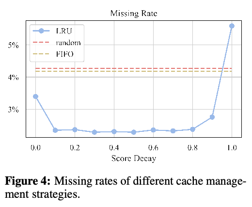
由于超长序列具有海量记忆单元，我们采用卸载机制以节省 GPU 显存。考虑到记忆单元使用频率较低，我们将大多数记忆单元卸载到 CPU 内存，仅在 GPU 显存中保留经常使用的记忆单元和当前所需的记忆单元。为此，我们在 GPU 显存中维护缓存，以有效利用 GPU 显存，并减少 CPU 与 GPU 之间的通信。GPU 缓存大小固定，因此我们设计最近最少使用（LRU）策略来管理缓存。本节将详细介绍该管理策略。
加载记忆单元。每个计算步骤，我们首先计算各记忆单元的相关性分数，以确定应当使用哪些单元。然后，对于每个所需记忆单元，先在缓存中查找；若未命中，再从 CPU 内存传输到 GPU 显存。
卸载记忆单元。attention 计算之后，我们需要卸载冗余记忆单元，以保持 GPU 缓存大小固定。为此，我们采用 LRU 策略。具体而言，对于每个加载到 GPU 缓存中的记忆单元，我们分配一个频率分数 \(s_{b}\)，用于决定该单元应保留在 GPU 显存中，还是卸载至 CPU 内存以节省 GPU 显存。频率分数在 attention 计算之后更新，具体更新方式如下：
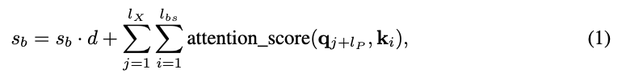
其中，\(l_{u}\) 表示此次查找涉及的当前 token 数量；\(\operatorname{attention_score}(q, k)\) 表示执行 attention 计算后得到的 \(Q\) 相对于 \(k\) 的 attention 分数，范围为 0 至 1。\(d\) 是表示衰减系数的超参数，用来纳入此前查找的影响。每次 attention 计算之后，我们根据频率分数 \(s_{b}\) 对 GPU 缓存中的所有记忆单元排序，并将分数最低的单元卸载回 CPU 内存。
译注：公式（1）使用 \(l_{X}\) 和小写 \(q\)，原文解释却写作 \(l_{u}\) 和大写 \(Q\)；此处保留原文符号差异。
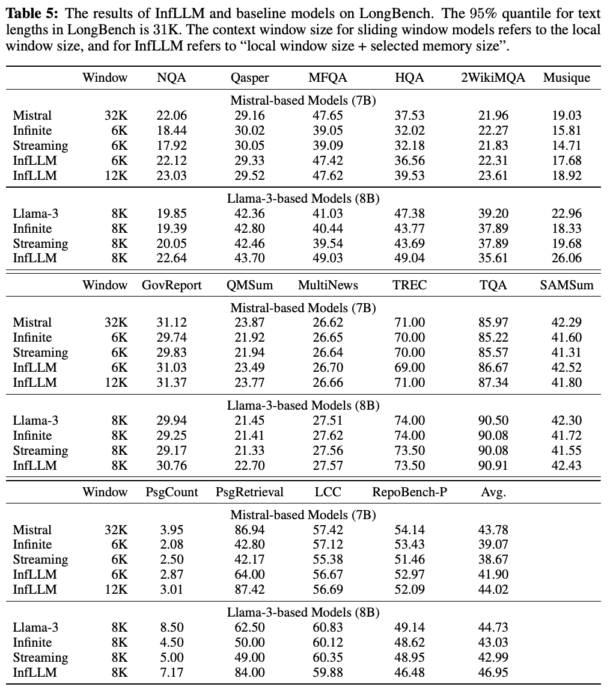
为验证缓存管理策略的有效性，我们在 GovReport 数据集的一份数据样本上，评估了不同缓存管理策略的缓存未命中率。具体而言，我们将所采用的 LRU 策略与以下策略比较：（1）随机（Random）：随机选择 GPU 缓存中的单元进行卸载。（2）先进先出（FIFO）：卸载最先加载到 GPU 缓存的单元。结果见图 4。可以观察到，我们采用的 LRU 策略未命中率更低，确保卸载机制不会引入显著时间开销。在正文所述实验中，我们选择的衰减值为 0.1。
在 InfLLM 中，我们为所有超出局部窗口大小的 token 分配相同的位置编码。因此，对于当前 token，我们没有显式提供上下文的位置信息。但我们认为，仅解码器模型的单向性质使其能够识别上下文的位置信息。例如，假设一个序列依次包含三个片段 \(S_{A}\)、\(S_{B}\) 和 \(S_{C}\)。编码 \(S_{C}\) 时，虽然 \(S_{A}\) 与 \(S_{B}\) 被分配相同的位置编码，但仅解码器模型的单向性质，使 \(S_{A}\) 与 \(S_{B}\) 的键值隐藏状态（接原文第 17 页）
（接原文第 16 页）
本身就 embedding 了它们的相对位置信息：\(S_{B}\) 编码时可以利用 \(S_{A}\) 的信息，而 \(S_{A}\) 只能访问序列中更早部分的信息。
为验证模型捕获上下文相对位置信息的能力，我们采用包含多个口令的 Retrieve.Passkey 任务进行评估。在该任务中，每个序列包含两个口令，模型需要按顺序输出这两个口令。数据构建方法与 ∞-Bench（Zhang et al., 2023a）一致，两个口令的位置随机选择。我们构建了 50 个序列，每个长度为 64K。实验结果表明，在该任务中，InfLLM 能够以 100% 的成功率按正确顺序输出两个口令的值。这说明，虽然我们的位置编码忽略了上下文的相对位置信息，但模型仍能按顺序有效理解上下文。
我们为 LLM 的所有层构建上下文记忆。将 GPU 缓存大小设为 32，是每一步加载单元数量的两倍。频率分数衰减系数设为 0.1。所有实验均采用半精度浮点数。我们使用 NVIDIA A100 或 A800 进行实验。对于扩展至 1,024K 上下文的实验，将编码块大小设为 2048，代表性 token 数量设为 1，以加快实验速度。
我们也使用 LongBench（Bai et al., 2023）作为基准，评估 InfLLM 和基线模型的有效性。评估结果见表 5。结果表明：（1）在多种不同任务中，InfLLM 优于其他能够处理流式输入的模型。这证明，上下文记忆提供的上下文信息能够高效提高模型性能。（2）采用 Llama-3 作为基础模型时，StreamingLLM 和 LM-Infinite 的性能仅与原始 Llama-3 相当，甚至更差。这表明，虽然 SWA 能够有效扩展 LLM 的上下文窗口大小，但这些模型丢弃了长距离上下文信息，因此无法有效理解长序列。（3）Mistral 可以处理最长 32K 的文本，覆盖 LongBench 中大多数样本。相比之下，InfLLM 的窗口大小仅为 12K，却在平均性能上取得相当甚至更好的结果。这进一步展示了 InfLLM 过滤长上下文中噪声的能力，从而实现更好的长序列理解。
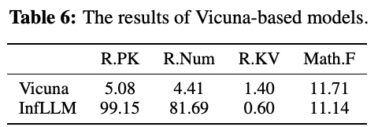
在前面各节中，我们展示了 InfLLM 可以将 Llama-3（最大长度为 8K）和 Mistral（最大长度为 32K）的上下文窗口扩展至数十万个 token。为进一步验证 InfLLM 的有效性，我们将其应用于最大长度仅为 4K 的 Vicuna（Chiang et al., 2023）。实验结果见表 6。结果表明，我们有效地将 Vicuna 的上下文长度扩展至 128K，在 Retrieve.Passkey 和 Retrieve.Number 任务上取得了显著性能提升。然而，InfLLM 在 Retrieve.KV 和 Math.Find 任务上未表现出性能增益。这是因为 Vicuna 的隐藏向量在超长文本中过滤噪声的能力有限，使上下文记忆难以在 Retrieve.KV 和 Math.Find 任务更复杂的上下文中有效定位相关信息。未来值得进一步探索，设计更强大的记忆机制。